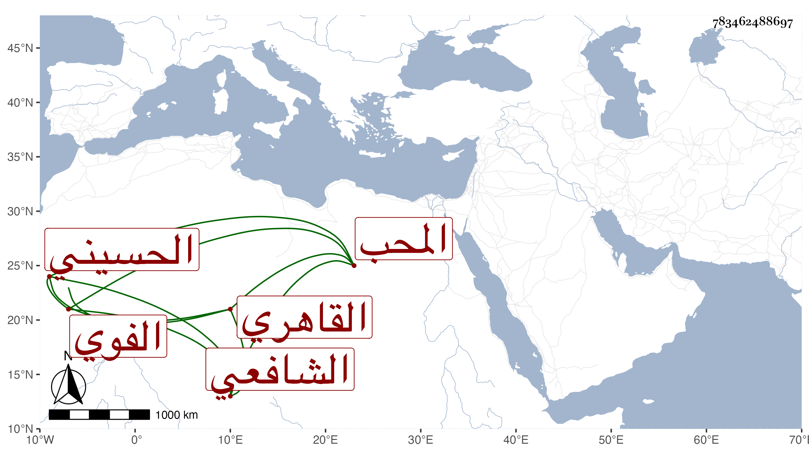

0902Sakhawi.DawLamic.ITO20230111-ara1.EIS1600.783462488697
Biography ID: 783462488697
195
محمد بن أحمد بن محمد بن منصور المحب الفوي الأصل القاهري الحسيني الشافعي أخو عبد الرحيم الماضي ويعرف بابن بحيح بموحدة مضمومة ومهملتين بينهما تحتانية وهو لقب لجده . حفظ المنهاج وعرضه واشتغل قليلا عند الحناوي والسيد النسابة والعز عبد السلام البغدادي ، وتكسب بالشهادة وكان متحريا فيها . مات في سنة أربع وستين .
